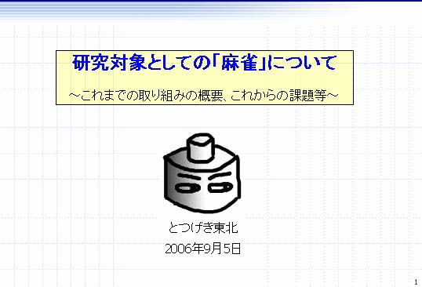
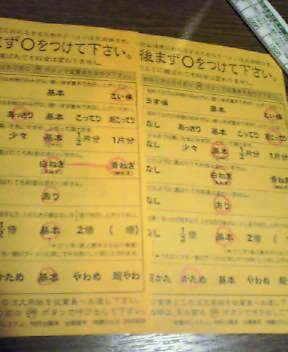
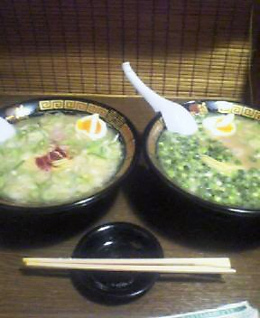
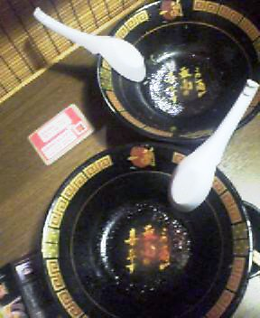

～～過去の雑記～～
19）05/12/09～06/02/17分
18）05/07/19～05/12/05分
17）05/04/04～05/07/06分
16）04/12/17～05/03/08分
15）03/08/25～04/12/12分
14）03/03/13～03/07/20分
13）03/01/20～03/03/12分
12）02/09/30～03/01/02分
11）02/07/08～02/09/29分
10）02/01/07～02/07/08分
９）01/08/30～01/10/30分
８）01/06/20～01/08/25分
７）01/05/09～01/06/12分
６）01/03/02～01/05/03分
５）01/02/06～01/03/01分
４）00/12/30～01/02/05分
３）00/12/22～00/12/29分
２）00/12/14～00/12/21分
１）00/11/24～00/12/13分
（雑記の内容については、あくまでもフィクションであると捉えてください。実際の団体・個人等とは無関係です）

07/02/21
立法府たる国会とは
凸「公務員だけに、国会において、国会議員からされる質問に対して、大臣が答弁する案とかを作ったりする作業があるんよね」
ゲ「筋書きを作るわけね」
凸「短い時間のうちに必死で数字を練り上げて答えを作るんだが、それが活かされないことも多い」
ゲ「結局、国会で質問されなかったり？」
凸「そうそう。こないだもせっかく調査かけて答弁案作ったのにさ。国会中継を見ていると。大臣、何か漠然とだけ答えているのよ。
○○大臣『……こういう風に、各方面の意見をとりいれてやっていく』
議員『そうじゃなくて、どういう風にやっていくのか、大臣の意見を』
○○大臣『ですからそれは……まあいろいろと難題はありますけども。
各方面の意見をですね、とりいれて、検討したうえでやっていく』
あんた、言ってることさっきと一緒だろうが(笑)」
ゲ「うははははは。すこしわかりやすくなってるよ！」
凸「時間をかけているね(笑)」
ゲ「曖昧なままだがな」
凸「はよおわれ とか思っちゃってるね この大臣。」
ゲ「叱られてる小学生みたいだな」
凸「時間が全てを解決してくれるさ……」
ゲ「牛歩ですな」
06/11/11
☆今日は誕生日さ☆
ハッピバ～スデ～ィトゥ～ミー♪
ハッピバ～スデ～ィトゥ～ミー♪
ハアッピバァァ～～～～ス～デ～～～～～ィ
ディア～～～～……
ン～～～～ミ――――――――♪
ハ～～～ッピ～～～～バ～ス～デェィイトゥ～～ミ～～♪
ほらこれで満足かいアンタよぉ。
今日したことは、麻雀研究のためのプログラム組み、編集者＆漫画家の人と打ち合わせ、ふとんの上でゴロゴロ回転（角度は常に狂いなくθ）、トローチをなめる、なめまわす、なめつくす。その程度だよ。
あたしゃ風邪がひどくてセキがでまくり、喉が痛いんだよ。
それを押して、わが身を祝福する歌を命がけで歌ってんだから笑っちゃいけないよ。
仮病じゃないかって？
バカだねアンタ。
仮病はね、「使ったら看病したり心配してくれる人」がいる場合にのみ有効なんだよ。
人生の何たるかがわかってない子だよまったく。
どうだい、楽しいねぇコリャ。
酒飲んで寝よ寝よ。
06/10/08
ゲームサーバ落ちる
友達の凡と、よく「スト２」という対戦格闘ゲームのネット対戦をしている。
今日もさっそくＭＳＮメッセンジャーで誘いかけてみた。
凸：イッツ ショーターイム！
凸：わんぱくぼうずたちが 自らのスト２の腕を見せ合う時間だぜ！
凡：どこの売れないＤＪだよ
凸：どこにでもいるよ こういう手合い……俺もやってたし。
凡：あからさまに恥ずかしい過去だなおい……
さてゲーム、と思ったら、なんとサーバに接続できない。
凸：と思ったら ＹＯ！ なぜかサーバに接続できずにソフトが落ちるＺＥ！
どうせ一時的なものだろう、とかタカをくくっていたら、何度やってもやはり接続できない。
凸：「ＹＯ！」とか「ＺＥ！」いらなかったな……（テンションが下がり、ひどく冷静に）
凸：ネットワークに接続しようとすると落ちない？？
凡：ほんまや
凡：どうしたんだ
凸：これは本家ほんもとの、検索サーバが落ちてるのかな・・・
凸：まじでだめっぽいな
凡：うむ
凸：じゃあここでやろうか。
凸：おれリュウ。
凸：はやくキャラ選んで。
凡：ガイルで
凸：じゃあいくぞ ゴーーー ちゃ～らら～らららら
凸：ラウンドワン
凸：ファイッ！
凡：タメ
凸：垂直じゃんぷ
凸：反応若干遅れて、着地後ソニックくるだろうからガード
凡：着地地点にソニック
凸：ガード（誇らしげに）
凡：タメてソニック
凸：えーそれたまってなくない？
凡：いや、いけてるはず。
凸：おいおいいきなり意見の対立かよ。
凸：よし！ 実際のゲームでやってみて実験だ！！
凸：うわ、サーバがつながらないぞ！！←
凡：落ち着け。だからここでやってたんでしょうが(笑)
凸：そうだった。もっかいここでやろう。
凸：もう一度同じ状況で検証だ
凸：ごーーー らうんわん！ ふぁいっ！
凡：タメ
凸：大たつまき
凸：うわ！ 戦略変えてくると踏んだのだが(笑)
凸：きっとサマソくらう。
凡：見てからサマソ
凸：くらった。
凡：着地してソニク
凸：次のソニックは飛び込みジャンプ
凡：下がりながら弱そにっく
凸：うわ ソニックを飛び越せずに当たってしまったっぽいが
凸：飛び込めてるのかなぁ？
凡：微妙だね
凸：ていうか、はぁ・・・なぜかテンション下がるな このゲーム。いつもは面白いのに。なんでだ。
凡：うむ・・・
凡：一応リフトアッパーだしたから、ガイルは飛び込みくらってリュウはソニック踏んだってところかな・・
凸：まあそこはともかく 結果的にはおれが２連勝で勝ちだったと思う。
凸：次はもっと練習しといて。
06/09/07
神をも恐れぬ
あらゆる宗派の宗教法人に対応した汎用宗教法人管理システム「たんせつ」。しかもⅡかよ！！
す、すげえ。
信徒世帯、過去帳等の管理、護持負担金の会計管理等、すべてできる！！
やべぇ、ハイテクすぎる。
私のページのGoogle Adsenseの広告にでかでかと表示されてたというのもすごい。
いかん、こういう方向に進みたくなってくる自分がいるぜ……。
06/09/04
学会そして増刷！
明日は、第５回情報科学技術フォーラム「ゲーム情報学の新しい形」で発表してきますよ～。

学会の発表で、いきなりこんな名前、こんな絵でいいのおおぉぉぉ！？
さてさて、『科学する麻雀』講談社現代新書 ９刷！！！
今回も講談社からは連絡も報告もなし(￣ロ￣；)！また！
通帳に記帳して初めて気づくシステム・・・モリッシーめ。
と、本の売れ行きも好調で、麻雀の方もひさびさに2100に……なったと思ったら、こちらはすぐにまた下がった(￣ε￣||)
06/07/03
馬鹿はこう言った
私のやっている「名言と愚行に関するウィキ」より。
――――――――――――――――――――――――
（議論記録２）「自然の摂理と殺人」～とある凡庸な京都大学生との会話例
避妊薬について話していた流れから生じた「議論」。
相手：ピルっていうのは、人間のエゴだよね
凸：漠然としていて意味がわからん(笑)
相手：ようするにさ、自然の摂理に逆らおうとしてるわけでしょ
凸：自然の摂理ってなんだ？
相手：中田氏して、精子が卵子と出会うと妊娠するという
相手：それに逆らって、本来生まれてくるべき命を、人間のエゴで殺してる。そんな気がするんだ
凸：自然の摂理に反した考え方だな・・・。
相手：反した？
凸：自然に本来生まれてくる「べき」ものなど存在するわけないだろうが(笑)
凸：「本来～すべき」なんてもんは 人間がエゴで決定する概念だろ(笑)
凸：それなら避妊薬に限らず、結核菌に対する抗生物質などもぜひとも禁止すべきだろう。本来結核になるべき人間が結核にならないとは！
相手：まず、中絶は殺人であるかどうかというところから考えなければならないな
凸：殺人がそもそもなぜ悪いのかから考えなければならないだろ
相手：もっともだ
凸：殺人が「悪い」という判断は 自然の摂理ではない 人工的な判断でしょ
相手：本来、動物は他の動物を殺して生きてるからな
凸：うむ
凸：人間のエゴで作ったのが 殺しはよくないとか 中絶は悪だとか
凸：本来生まれてくるべき とか そういう諸概念でしょ
相手：中絶したことがおありなんですね
凸：はて？
凸：今 文脈上 もっとも意味のない質問が・・
相手：殺されるのが必然であれば殺人も正当化されるべきであるが
相手：そうでない場合は悪という事になりますね
相手：必然であるということは
相手：殺される必要があるということですね
凸：ちょっとまったまった
凸：意味がわからん
凸：「殺されるのが必然であれば、殺人も正当化されるべきである」
凸：についてもうちょっと説明をプリイズ
凸：具体的に例えば？
相手：例えば
相手：東大寺くんの放火事件
相手：弟と妹は殺されるべきではなかったが
相手：親は殺されるべきであったといえるでしょう
凸：何に基づいて？
相手：基準が欲しいんですか？
凸：まさか個人や個人の集合としての民衆的な感情にもとづいて？
凸：それとも何か殺人を正当化する法令等に基づいて？
凸：なぜ君は 殺されるべきであった と言ったの？
相手：それは
相手：将来性のある子供を苦しめることは
相手：罪だからです。一般的には。
凸：親を殺すことも罪ですね？
凸：こちらは法令に根拠を持っています。
相手：だが殺していい場合もある
凸：だから 何に基づいて？
凸：将来性のある子供を苦しめることは罪 という 誰かの意見に基づいて？
凸：確かに子供をそのように苦しめることは罪ですが、だからといって殺していいという根拠はありません。
相手：例えば
相手：ある少女がおっぱいが大きくなった小６の時から
相手：父親に定期的にレイプされていたとしましょう
凸：古代や中世ヨーロッパで よくあったことですね
相手：母親は父親に暴力を振られるのが嫌なので見て見ぬふりをしていたとしましょう
相手：少女には自立する力がないので
相手：しかしその少女が親を殺したら悪いですか？
凸：えーと だからおれは基準の話をしているので 基準に応じて悪さは違いますが、
凸：法令に基づくなら 悪いですね 当然。
相手：なんで悪いんですか？
凸：法令に書いてあるから。
凸：現代日本の 民衆感情に基づくなら 悪いと言う人もいるし 殺して当然 という人もいるので 悪かったり悪くなかったりします。
凸：でも、レイプされたら殺してもよい とは書いていない。
相手：その少女は
相手：日本という国に生まれましたが
相手：自然と国籍が日本になり
相手：もし他の国に生まれていたら
相手：レイプした親を殺しても悪くなかったかもしれないんですが
凸：で、親を殺しても 悪くない という根拠は何？
凸：そのようなことはどうでもよろしい 根拠はなに？
相手：根拠？
凸：うん
相手：レイプした親を殺していい根拠？
相手：数式を使って表現してほしいのか？
凸：数式じゃなくて文章でいいよ
凸：法令とか
凸：そのほかに合理的に基づくものがあるなら その根拠。
相手：法令なんて
相手：守る必要があるとは思えないのだが
相手：おれが日本という国に生まれたのは
相手：偶然だろ
凸：法令を守らない それはいいよ じゃあそのかわり何に基づいてるの？
凸：例えばその少女がとある国に生きていて、その国では風習として、親にレイプされたならば親を殺してもいいというものがある、というならそれを示していただければよい。
凸：それとも、基づくものは、君の感情？
相手：勝手に日本国籍にされて
相手：日本の法律を守りなさいと
凸:いや それはいいからさ。その日本という国において なんでレイプした親を殺して当然 という結論が出てきたわけ？
相手：レイプは悪いことだという認識はおありですか？
凸：日本の法令に基づく限り ありますよ。
凸：それにまあ現代日本の社会風習や文化として 悪いという認識もある。
凸：もちろん古代ギリシャのローマにおいて、子供を殺しても何ら罪に問われなかったわけですが、それはともかく、現代日本についてはレイプすることは悪いことですよね。
相手：レイプをした親は裁かれるべきだという事は分かりますね
凸：うん 法令に基づき裁かれるべきであることはわかりますよ
相手：法令法令と
相手：法律にいかほどの価値がありますか？
凸：だから 君は法令以外の何に基づいているの？ と何度も聞いているでしょ？ 君の感情？
凸：法令がつまらんか正しいかなど しらん。だが君の感情などそれ以上に取るに足りない。
相手：勝手に作られて
相手：国民の大半は
相手：どういう法律があるかすら知らない
凸：法令じゃなく 単なる君の感情に基づく方がよほど困る。
凸：君は何に基づいて 親が殺されるべきだと思ったのか だよ
凸：それを聞いているのだ
相手：それはレイプされた親は悪いから
相手：その少女に殺されて当然という考え方に基づいて。
凸：じゃあ万引きした人も悪いから殺してよい？
凸：その店の店主に殺されて当然？
相手：裁かれて当然ですね
相手：殺すまでしていいかどうかは
相手：知りませんが、裁かれるべきでしょう
凸：裁かれるべき までは同意してるよ おれも。
凸：ただ さっき君は 例えば親は子によって殺されて当然といった旨の主張をした
凸：殺されてよい というのは どこにも根拠がない。
凸：万引きの例でも、店主が万引き犯を裁いていい根拠などまったくない。あくまでも裁判官が裁くべきだ。
相手：へ理屈さんですね
凸：君に理屈がないだけだよ
相手：だったら
相手：レイプでもなんでもすれば？
凸：は？
凸：頭わるすぎない？
相手：なんで？
凸：いや だってすべて論理がないから。
凸：万引きやレイプをしてはならない という点については
凸：お互い同意してるじゃない
凸：それなのに なんで レイプすれば？ という提案が出るの？
相手：法令は別に守らんでもいいと思うけどね
相手：だって知らないルールだもん
凸：じゃあ万引きしてもいいよね
凸：レイプもいいんじゃない 知らないもん といわれたら、納得するの？
凸：知らない方が悪い という可能性はないの？
凸：法令を守ることは国民の義務である という根拠のある説が正しい可能性はないの？
相手：ない
相手：だって
相手：法律を学ぶのに
相手：どれだけの時間がかかる？
相手：司法試験を突破するのに
凸：いやそんな話にもってくな(笑)
凸：「法令など勝手に作られたもので、皆が守れるものじゃない。レイプしてもいい風習のある国もあるじゃん、『だから』日本でレイプしてもいいじゃん」と言われたらそれで破綻するだろうが(笑) どんだけクソ論法だよ。
相手：どれほどの時間がかかる
相手：もし国民全員が法律を知る為に司法試験突破を義務つけられたとすると
相手：どうなりますか？
凸：とりあえず レイプ犯を殺しても当然 という君の主張がなぜ正しいのかは 君からまだまったく説明されてないよ
凸：法令を知らないから とか 司法試験が難しいから
凸：ということによっては 君の主張は 何ら正しいものとならない
凸：また、仮に君の論を半ば認めるとしても、殺人罪が罪になることを知らない人がそうそういるとも思えない。
相手：昼も夜も惜しんで
相手：工事現場のおっさんも窓際のリーマンも
相手：みんな一斉に法律を勉強しはじめたらどうなりますか？
相手：経済が破綻しますが
凸：どーでもいー話はやめて 議論をしようぜ
凸：結果が悪くなるから 理屈が間違いである というのは理屈として間違いだ
相手：じゃああなたはサッカーでいきなり知らないルールで裁かれても結構なんですね
相手：後ろ向きに走ったら
相手：いきなりイエローをもらったなんていうのも結構なんですね
凸：そのようなルールが自分の知らないところで サッカー連盟などで決められていて
凸：おれが知らずにサッカーしててイエローカードだされたら
凸：納得するしかないじゃん 無知なのが悪い。
相手：そうなの？
相手：無知は悪ですか
凸：だってそうじゃなきゃ
凸：レイプは悪 って知らなければ レイプしまくっても全然いいってことになるだろ
相手：なんで？
相手：レイプは悪だろ
凸：はぁ？ ＞法令は別に守らんでもいいと思うけどね ＞だって知らないルールだもん
という話は？
凸：君は今までまさに、「法令等に関してすべての人に知識をつけさせるのは困難だし不都合だから、法令等に関して無知である人が多くいるし、それゆえ、法令等は守らなくてよい」旨、主張していたじゃないか。大丈夫か？
凸：まあいいや
凸：そんなことより 君が レイプ犯を殺しても当然 と なにに基づいて主張するのかを説明してよ。
凸：レイプは悪 は認める。
凸：レイプした親を殺していい は認めない。
相手：しょうがない。それは暇があったら、ほむぺにうｐしてやろう
凸：え！？ いや 今説明できないの？
凸：そんな主張をするくらいだから 当然 思想があって言っているものと思ったが・・・
凸：いわゆる 自分の感情＞法令 という「人間のエゴ」というやつか・・・？
相手：なにか
相手：トラウマでもあるんですね
凸：だからそうやって議論から逃げて
凸：議論で追い詰められるのは自分の論理が稚拙だからではなくて、相手に性格や性質の問題があるからだと考えるようなやりかたはやめて
凸：ちゃんと議論しようぜ。
相手：とんだ議論好きだな
凸：いや あまりにも 理屈がないから ちょっとびっくりしただけで
凸：この程度の「議論」ができない人が そんなに多いとは思ってなかったもんで。
相手：まぁ最近は
相手：学生の質が落ちていますから
凸：うむ まあそういうことで納得しておく・・・
相手：ゆとり教育の弊害ですね
凸：教育の問題か個人の問題かはともかくとして、何らかの事情による弊害があったのでしょうな。
相手：あと２次で国語がないから
相手：それにおれの仕事はそういう方向には進まないので
凸：ようは君に都合がよければ あとは君の主観で判断すればｏｋ と こういうことですな。最初の エゴがうんぬん の高尚な話からだいぶそれましたな。
凸：ことによると、中絶することよりも、その種の行為の方がよほどエゴではないかと思いますが(笑)
相手：だから中絶してもいいというんですか
相手：場合によってはいいでしょう。レイプされた場合とか
凸：もう君、考えたり、しゃべったりを試みなくていいから。私に対して大衆道徳に基づく凡庸な信念の陳列を行うことは、犯罪に等しい。
凸：はじめ、人を殺してよいか悪いかということと、自然の摂理という話と、人間のエゴ、という話でした。んで、君は エゴであるということをもとに 自然の摂理に反することは良くないといった方向に進めた。
凸：進んだ結果が、単に君個人のエゴに落ち着いてしまったわけです。
相手：ただ、何せおれが進もうとしている世界にはそんなものは必要ないので
凸：見事なまでの恥の上塗りっぷり。どこに出しても恥ずかしい致命的な知性の欠如ですね。
06/07/01
N階の移動にエレベータを使うなんて
昨年、激務に忙殺され、半ば意識が飛びそうになりながら職場のエレベータに呆然と乗っていた折、同乗していた「おばちゃん」２人の会話を耳にして、ふと我に返ったことがある。
というのも、彼女らが乗車してきたのは６階だったのだが、同時に乗車した男性が８階で降りたのを確認して、
「たった２階の移動でエレベータなんて……ねぇ」
と話していたからである。そして、彼女たちのうち片方が降りたのは「９Ｆ」だった。
そればかりではない。さらに９Ｆでは、別の女性が乗車したのだが、「おばちゃん」の知り合いだったようで、なにやら挨拶をしている。だがなんと、９Ｆで乗り込んできた女性が押した階は、「１０Ｆ」だったのである。「おばちゃん」は、すべてを目撃していた筆者に対して気まずそうにするでもなく、あたかも何事も特殊なことは起きなかったのだといったそぶりで、「日本における平均的な、６階からエレベータに乗車しただけのおばちゃん」の、基本的かつ平凡な行動（肩を掻いてみたり、階数表示板を眺めてみたり）を演じ続けてみせた。
この一連の事態に、筆者は疲労のすべてが吹き飛んでしまった。
筆者は何も、「おばちゃん」が自らの深遠な哲学を貫徹し、知人に「たった１階でエレベーターなの！？」などと発話することによって発生する修羅場を期待したわけではない。彼女がせめてもの罪滅ぼしに、許容可能なエレベータによる移動階数の関数を提示しつつ、「ほら最小許容移動階数は２．２３だから３階の移動はいいのよ、２階はもちろん１階はダメだけど知人だからね……」などと筆者に説明してくれることを願ったわけでもない。「Ｎ階以上でなければダメ」と感じるとき、Ｎが客観的に示せないのだからこの感情が間違っているなどとごねる気もなければ、「おばちゃん」が自分の意見の身勝手さに少しでも違和感を覚えることを望んだわけでもない。
純粋に、この「おばちゃん」の振る舞いにおける、あまりにもできすぎた大衆性の露呈ぶりと、それを筆者に閲覧することを許可した偶然との重複に、ほとんど感謝に近い感慨を覚えたのである。
06/06/06
ディズニーランド感想
ものすごく疲れた(笑)
並ぶのは覚悟してたが、前日からかなり寝不足で、しかも金曜の夜にした卓球（すげー回転かかりまくってる本気ｖｅｒ．）の疲れもたまっていて、最後はベンチで寝てしまうしまつ。
ていうかさぁ、カチューシャ売ってるよね。ネコ耳とかミッキー耳の。
かわいい子がつける分にはいいよ？
でも明らかに憲法違反クラスにつける権利を持たない人が、やってしまっている時あるよね。
お前ドクロやトカゲのカチューシャとかにしとけ。違和感ないから。夢と魔法の王国を一瞬にして惰性と倦怠の王国にするのだけはやめてくれ。
それから、キャーキャーわめきながら後ろ向きに突進してくるデブ、やめてくれないかな。
難関シューティングのボスかよてめぇは。当たり判定でかすぎるんだよ。２機減ったわ。
私の才能及び反射神経をもって必死で避けてもダメじゃねーか。何誘導弾みたいに避ける方向に進んでくるんだよ。
人の気持ち、他人の痛み、考えようよ。
ま、疲れたけど楽しかった。これが初ディズニーという悲しい歴史を持つ私には←
06/06/03
修学旅行とディズニー
凸：明日からディズニー フッフー★
Ｎ：いいねー
凸：日～月ディズニーですよ。
Ｎ：日曜日の夜が、もっともすいているっていううわさじゃん。
凸：うむ 日曜夜にもいくがね。
Ｎ：で、平日は意外と、修学旅行とブッキングしたりすると。
凸：うわ～それ最悪だな。
Ｎ：ククク 不幸になりなさい……
凸：ていうか、修学旅行でディズニーとかあるんだ・・
Ｎ：え。中学校の修学旅行ディズニーだったよ？
凸：まじで・・・ありえねー楽しさだな
Ｎ：たのしいよ？ｗ
凸：おれの中学校の修学旅行 広島の宮島とか原爆ドームとか。
Ｎ：さむっ！！
凸：原爆ドームをみればみるほど うちの中学校に原爆落としたくなったわ
Ｎ：うむ。
Ｎ：ちなみに小学校 佐渡島。←
凸：残念・・・
Ｎ：うん。
凸：おれの小学校の修学旅行 広島の宮島とか原爆ドームとか。
凸：おいかぶっとるかぶっとる！！
凸：あんたら頭悪い！！ 偏差値低い！！ 可能な限り早期に死んだらええがな死んだら！！
Ｎ：( ≧∇≦)ﾌﾞﾊﾊﾊ!
Ｎ：ディズニーは班行動じゃなくてすごく楽しかったよ
凸：なにその僥倖……キタネー
Ｎ：広島は、ｱﾐｭｰｽﾞﾒﾝﾄ要素ｾﾞﾛなの？
凸：ない。
Ｎ：まったく？
凸：ハト。
Ｎ：ぇ……
凸：ハト多い。得！！
凸：様々な角度から見ても、いかなる意味においても、なんら得じゃねーよ！ ハゲがよ。
Ｎ：相当うらみたまってるのね(笑)
凸：ハトとみせかけたハト型爆弾（通称ハトバク）とかに吹き飛ばされて死ねよ全員。とくに、おれより顔かっこいい男子中心に。
Ｎ：それってほとんどクラス男子全員（ｒｙ
凸：ハトは平和の象徴。大切にな。
Ｎ：何の主張してんのあんた(笑) ＡＣですか。
凸：１日１回は首を不自然な方向に曲げてみるなど、子供らしさも忘れずにね。
Ｎ：ＡＣじゃないね絶対……
06/05/01
愛を語る資格
～もう君に
一蘭を愛しているとは
言わせない～
忌めたろ（以下、い）「凸はどこのラーメンが好き？」
凸「日記に書いてるとおり、一蘭が好きだな～」
い「一蘭うまいよな」
凸「当然、味こいめ、油あっさり、ネギは白と青のトッピング２つ、かたさ基本、タレ基本ですね」
い「いや、味こいめ、油超こってり、白ネギ、麺かためが最高だよ」
凸「ガキがっ！ 自称うまいだけだろ！？ おれは色々食い比べてんだよ！」
い「いやぁ、完全に同じ条件ではないじゃん。」
凸「アホの論法かよ……」
い「店によってルールも違うし。」
凸「おい何のルールだよ(笑)」
い「とにかく、おれのやつが最高にうまいね」
凸「おれは一蘭には人生で50回以上は楽勝いってんだ！ 先週も４回いってんだよ！！ その上でこの味にたどり着いたのだ！」
い「甘いな……」
凸「よしわかった、今度おれのメニューで食ってみろ。おれも君のメニューで食うから。それで勝負しようやないか！ こうなったら、いちかばちかや！！ ハタつつみや！！」
い「なんでプロゴルファー猿なの……つーか、一蘭電車で行くだけで1500円かかるのよね……」
凸「君ダメ！ ノット美食家！ 東北大学川内北キャンパスの麺コーナーに『トッピング』のシステムを単独で構築したおれとは、味に対する愛が違う！！」
い「でも金かかるからなぁ」
凸「おれが明日いったろーやないか！！」
そして本日一蘭に行ってきた。

上の写真をみよ。
２９歳の男、いきなり一蘭のオーダー用紙を２つ手にしている。
何をする気であろうか。
凸「これらをお願いします」
店員「えっ……」
凸「本様式の記載に基づき、ラーメンをご用意願います」
店員「！？」

答えが、この写真である。
「真の意味での食い比べをする」ため、ラーメンを２つ頼んだのである！
（マメ知識：写真のように、ネギの青と白の両方に○をつけると、両方半分ずつ入ってきてうまい。なお、替え玉の際などに、スープの味を濃くしてもらったり、けっこう自由にできる）
凸「この実証主義的精神……やつとおれは違う！」
ちょっとうれしくなって、同じく一蘭が好きな別の友達にメール。
凸「今一蘭で食ってるよ」
即座に返事が帰ってきた。
友「おれも今一蘭だよ。」証拠写真つきの返信。
凸「お前また一蘭かよ……」
友「君もじゃん……」
凸「ラーメン、愛。ですから。ていうか、おれ今日、一蘭の神だぜ！？」
友「何が」
凸「この写真みろよ！ ２つ頼んで厳密に食い比べしてんだ」
友「ぉぃお前まじ神だよ……おれは今日ネギ１６倍量トッピング試してる」
凸「ぎゃはは。お前、友達から、馬鹿とか偏差値低いねとか、よく言われない？(笑)」
友「お前もだろ！！(笑)」

さて、そうこうしているうちに、当然のように完食。
「この一滴が最高の喜びです。この一滴が最高の喜びです。」
２回も喜んでもうとるがな！( ≧∇≦)ﾌﾞﾊﾊﾊ!
偶然一蘭で出くわした友達と、外で待ち合わせて互いの一蘭への愛をたたえつつ帰路についた。
※油超こってりは、油部分の甘みがよく出ていて、最初の半分くらいはかなりおいしく食べれた。たまに食う分にはいい。
しかし私のように週に４回とかいく女性には、あっさりがおすすめだゾ★ ← そんな女性やだよ……
ちなみに次のチャレンジは、「一蘭でもっともまずい組み合わせの開発」の予定。
うす味、油超こってり、麺超やわらか、チャーシューなし、秘伝のタレなし……まずそう！！！！（涙）
06/04/30
よくある風景
ＭＳＮメッセの会話にて。
Ｇ 凸さんに質問というか問題
Ｇ ４人の女性がいます。全員、月に１回生理がきます。
Ｇ その期間が全員が５日間だとして、
Ｇ ４人全員が生理でない日数は、月に何日、または何％の確率でしょうか？
凸 なんか面倒そうだな
Ｇ 全員が生理じゃない時に出かけたいんだけど、
Ｇ その確率ってどのくらいあるものかと...w
Ｇ 考えたけど、全然わからんかった(-"-;
凸 場合わけせんといかんのかなぁ？
凸 ２人目が１人目と何日重なるか、その確率を求めて、そのおのおのの場合に、３人目が何日重なるか、その確率を求めて、そのおのおのの場合に･･･と４人までやらないといかんなら面倒だな
Ｇ なるほど...
凸 プログラムで解いてみようか？(笑)
Ｇ 簡単にできるなら...おもしろそう！
Ｇ でも、ちょっと下に行かないとならないので
Ｇ １時間くらい退席したいけどいい？
Ｇ 用事が済んだら戻ってきまーす♪
（約15分間、シコシコとプログラミング）
Ｇ ただいまー！
Ｇ ご飯食べて来た。
お前、人に任せて何しとん。
「下にいかないとならない」＝「めしくいてーなぁ」かよ。
凸 おかえりモス
Ｇ あれ、やってみた？
凸 求めましたよー
凸 シミュレーションで求めたので 近似値ですが
凸 特定の１日が大丈夫な確率は48.37％
Ｇ え、でもさなんで単純計算でﾏｯｸｽが20日間かぶるのに、
Ｇ かぶらない日が48.37%なのだろうか...
凸 かぶらない日は最低10日間はあるが 10日しかないことって 非常に珍しいのだね
Ｇ あ、そっか。
凸 で 平均すると15.5日分くらいが ｏｋの日になる
凸 ん、これ、考えたら机上の計算でも簡単だったわ･･･( ノД`)
凸 30日のうちランダムな開始日をとってそこから５日間ダメだとすると、
凸 特定の１人にとって、特定の１日がＯＫな確率は1-5/30。
凸 各々の人のダメな確率は独立だから、４名で（1-5/30）^4だけで求まるわ･･･
凸 ま、まあわざとさ(；´ｰ`)ｙ-ﾟﾟ
凸 計算だと48.23％ですな。シミュレーションが48.37％だからだいたいあってたね。
Ｇ それにしても面白い！
Ｇ そういう確率を知りたいっていう興味は常にいつもあるんだよね。
ほう、それはいいことだ。
Ｇ でも、どっからどう考えていいかわかんない。
Ｇ 今更勉強するのもだるいから、何か疑問があったら凸先生を頼るわっ♪
だがそれはやめろ！！
最初「凸さんに問題」言うとったがな！
クイズで～す♪ みたいなノリやったがな！
自分答え知らずに単に答え求めさせただけかよ！！
ちなみに、この人に限らず、こういう件はよくある。
「Ｃ言語で書いたプログラムが動かないから見て欲しいんだけど」
大学の宿題程度で私を召還するな！！
「どうして水が100度を超えると泡になるのか知りたいんだけど」
高校レベルの化学問題を聞くな！！！ 教科書読め！
「『暫定』ってどういう意味？」
Googleで調べろッ！
しかも「暫定 ハゲチャピン」で調べろ！
「凸さんって、どうして彼女を作らないの？」
核心をつくなァァァ！！！！
06/04/16
まじで、いきづらい
SNS最大手、「mixi」には「コミュニティ」というものがある。
同じような趣味等を持つ人々が集まる場である。
そこで見つけたのが「生きずらい。」コミュ。
最初わざとかなと思ったら、どうもそうでもないらしい(笑)
「生きづらい。」だろ……。
と思ったらトピの一つで既に指摘レスが入っていた。
……えっ！？ スルーされてる！？
マジ！？
みんな何事もなかったように「でも、毎日生きずらいです。」「本当に生きずらいけど」とか言い続けてる！！
あくまでも貫き通すんだ！？
裸一貫みたいな感じなんだ？
つえー、つえーよ……。
トップページには、検索用の単語集が。
【
検索用
精神 メンタル メンヘル 生きる 死 自殺 助け
生きずらい 死にたい
】
おい！！
これじゃ「生きづらい」と思った人が辿りつけねーじゃねーか！！(#´Ｏ`)
行きづらいコミュであるといえよう。
「生きずらいなぁ」と、ちょっと変な感じで思ってる人ばっかり寄ってきてまうがな！
06/04/04
捏造
■幼心にショックだった出来事■
うわ、おかん、こないだ誕生日に10枚あげた「おつかい行き券」偽造してるよ……
同じ裏紙探してまで写しとってるよ……
やべぇ、やべぇよアンタ……
06/04/04
花見
今年花見をしていない私。
ぜひとも花見にいきたくてしょうがなかった。
誰かかわいい子誘ってくれないかな……と思っていたら、ＡＫＯから電話が。
ＡＫＯ「花見いこう～」
凸「おう！」
ＡＫＯ「池袋きて～」
凸「ｏｋ！！」
（電車で移動）
凸「西口についたよ」
ＡＫＯ「では○○の７Ｆ、アジアンキッチンへ」
凸「ういーす」
ＡＫＯ「よーぅ。何飲む？」
凸「ワイン」
（30分経過）
凸「……なあ、これ花見と関係あるの」
ＡＫＯ「……だまって」
（30分経過）
凸「これ花見じゃないよね？」
ＡＫＯ「男はみんなそう！！」
（30分経過）
凸「……花見してぇ」
ＡＫＯ「……もう花見はおしまいなの！！！」
凸「なにがやねん！！！ お前まじでどっかいって！！」
06/03/26
尿量を計測する女
ご（女性） あのさ、ちょっとこれおかしな話なんだけど
凸 ふむ
ご すごい我慢した状態で、トイレに行った時ってどのくらいの量でてると思う？
ご 小の方ね
凸 あーそれよく考える← さすがに実験できんけど
ご 実は実験したことあるの。
凸 うわ！？ どこまで物理学者だよお前……
ご 500mlの紙パックの
ご 口部分を切って
凸 3はい分とかいきそうだなぁとちょっと思った むり？
凸 いや、もっとだ 5はい！
ご いやそれが...
ご 自分でしてるとすごい量のように感じるでしょ？
凸 うはは やっぱりいかないのね(笑)
ご その時はウーロン茶とか紅茶とか、めちゃくちゃ飲んで
ご もう絶対これ以上無理ってくらい我慢して
凸 まー普通に考えて500*5で2.5キロ分もやせないものねぇ(笑)
ご 風呂場で紙パックにしてみたら
凸 ｲﾔｰｰｰｰｰｰｰｰｰｰｰ
ご 500mlの３分の２弱だった...
凸 よっわ！
ご え？？こんなもんなの？って思った。
凸 それじゃ戦えないじゃん！
ご いや私の膀胱は巨大だよ。
凸 「おしっこおれより出さない限り、殺す」って言われたとき、
凸 もし相手が１リットルしてきたらどうするの！？
凸 全然だめじゃん・・・
ご いや１リットルは絶対できない！
ご でも男の方が、量はあきらかに多いらしい。
凸 臓器がうまってないからね(笑)
ご 尿道が長いから、我慢できる限界が女より多いんだって。
凸 おえー そんな生物学的な事情が！ おれの読みはなに！？
ご 誰にも言わないから、凸さん男バージョンでやってみてw
凸 やすやすと「わかった」と請け負えるもんじゃないだろ！！
ご 男だと1リットルとか行くかもしれん...
凸 この会話公開する予定なのに！
凸 「平成17年度末までに実行を検討」なんて明言したら大変じゃん。
ご 男バージョンもやってみて男女の比較を書かないと
凸 ・・・私にも生活がある←
ご しかもみんなで記録更新を競い合うよう、闘志をかき立てるように書く...
凸 マイミクからの報告やだな・・・掲示板とかならまだしも
凸 むだにメッセージできたらショックだ
凸 凸さんにだけ教えますが 2リットルいきました 誰にも言わないでください とか
凸 オカルトだろ・・
ご それこそうざい、けど笑えるw
凸 ああ しんで。
ご _(⌒▽⌒)ﾉ彡☆ばんばん!
ご １リットルってでも多分すごいな...
凸 発電可能なレベルだな
ご 誰か感化されて測る人いないかな...
凸 凡人には敷居が高いな フロとおしっこのコラボレーションは。
ご 風呂でおしっことかごく普通ですよ。
凸 (￣д￣)ｴｰ！！
ご 私はなぜか風呂に入る前に、トイレしても
ご なぜか体が水に触った瞬間、絶対におしっこしたくなるの。
凸 半透膜が弱いんだよ・・←
凸 水が大量に流入してくるんだ
ご でも女の子でそう言う子多いよ。
ご シャワー浴びた瞬間、おしっこしたくなる
ご って言う子、結構いる。
凸 少なくともおれの知り合いではいないが(笑)
ご 言わないだけだーーー！！ だから女はいかんo(｀⌒´*)o 気取りすぎたw
凸 お前がもっと気取れよ！！
凸 君さあ それ 友達を変な選別方法で選別してないか？(笑)
ご そうなのか？？
凸 無意識のうちに シャワー浴びたらおしっこする人ばかりがまわりに・・・
ご 本当にいっぱいいるんだってー！
凸 しらずしらずのうちに そうじゃなきゃ友達になれん！ みたいな会話をしてるとか(笑)
ご 初対面の人に、
ご 「シャワー浴びたらおしっこしたくなりますか？」
ご 「ええ...」
凸 初対面でシャワー→オシッコのコンボができるかどうか聞くなバカ！！
凸 明らかに不適切だろうが(笑)
ご 「お???我が友よ！！」と、いきなりﾊｲﾀｯﾁみたいな。
凸 それ そういう風に無理にもっていってるんだって！！！(笑)
凸 ジャイアンの言う「こころのともよ」並に信頼がおけん
凸 お前歌ほめたときだけだろ・・・
ご そういう空気を私がかもしだしているのか...
凸 君が友達になるのは、シャワーおしっこを快く肯定したときだけろ・・・(笑)
06/09/06
めんたいこを買いに
前々からお知らせしていたとおり、今日はめんたいこを買いに九州まで行ってまいりました！
いや～、からいね。まじで。ハバネロとか最強。
でもさ～、日持ちしなさそうなので、これをあと５本、今から食わないとダメなの……！？
まじ？
ねぇ、まじ？
考え直して！！！
役人風に言うと「再検討されたい」。
からっ！！！！！！！！！！！！！
３本目でかなり飽きてきたんだけど！！！
役人風に言うと「めんたいこの短期的大量消費においては、３本目以降に倦怠感が生ずると思料」。
朝６時くらいに起きて、飛行機で福岡へ。
で、だーここさんに福岡大学へ車で送ってもらった。
そしてめでたくめんたいこを買い、夜７時５０分には福岡発。
ん……何か忘れてねぇ！？
そうだ！
情報科学技術フォーラムのイベント企画にも行ったんだった！
司会「九州工業大で囲碁の研究を進めていらっしゃる○○さんです、ではお願いします」
○○「ご紹介にあずかりました、○○です」
とか他の先生方がやってらっしゃる中で、
司会「え～麻雀の研究をされている、……その……、とつげき東北さんです」
凸「え～と……ご紹介にあずかりました、え～……、とつげき東北、です……」
（どっ）
名前のみで笑うなてめーらぁぁ！！！！！！！！！！！
最初なんとなくゴロで名前決めちゃったことを、今後悔してんだよ！！
失って初めて気づいてるんだよ！！
差別反対！
子「ねぇママ、ほかのせんせいたちはみんな、『九州工業大』とか、『はこだて未来大』とか、だいがくめいがかいてあるのに、どうしてあのとつげきというひとだけ、『インターネット麻雀研究家』ってかいてあるの？」
母「しっ！ あのひとはね、アカポスじゃないのよ。かなしいひとなの。」
子「そっかぁ！！！ だからあんなへんなかたがきなんだね！ みんなになまえでわらわれて、かわいそうだね！」
しかし、あいかわらず、こういうイベントは楽しいね。
他の先生方の研究とか、普通に観客気分でメモ取ったりして聞いちゃってたわ～。
資料の一部をうｐしときます。
学会の発表で顔文字とか使って、死んだ方がいいのかな(＾－＾)
06/03/19
もっと企画して
私は『科学する麻雀』（講談社現代新書）という本を出版している。
新書としてかなりの部数売れたため、原稿の依頼なんかが来る。
「○○社の××と申します。
突然のメール失礼します。
このたび弊社では、「麻雀を科学する」という本を企画して」
帰れ。
思いっきりぱくりじゃねーか！
「□□社の△△と申します。
現在弊社では、「科学麻雀（仮称）」という本」
『科学する麻雀』のことか―――！！！
□□社よ、お前もか！！！！
ていうか、
『科学する麻雀』
『麻雀を科学する』
『科学麻雀』
って出したら明らかにピエロやろうが(笑)
なんで３部作やねん。指輪物語かよ。
しかも確実に２冊目３冊目は１冊目の水増し。
「それが大事」って曲大事にしすぎて他の曲売れずに消えていったあの歌手かよ。
しかし安直すぎるな(笑)
もうちょっと新しくて面白い企画を持ってきてほしいよ！
みんなが( ≧∇≦)ﾌﾞﾊﾊﾊ!と笑えてためになるような本かきた～い。
むしろ意味不明のギャグいっぱい載せてマンガにしたい。
※サイバラやくらたまみたいな絵描いてくれるマンガ家さん募集
いっそ、科学する麻雀の内容にそのままマンガを加えるとかでもいい。ただ、いきなり似たような本を書き下ろせはねーだろ(笑)
どっちにしろ原稿書き溜めてるので、できるだけ早く単行本は出したいけどな。
じゃが、打ち合わせ＝ただめしの法則も忘れてはならないッ！！
06/03/14
きこりと斧
■■■■■
妖精「あなたの落としたのは金のオノですか、それとも銀のオノですか」
きこり「鉄のオノを落としただ」
妖精「あなたは正直者ですね。」
きこり「そんなことないだよぉ」
妖精「ご褒美にこの金のオノと銀のオノをあげましょう」
きこり「ありがとうございますだぁ！！」
■■■■■
妖精「あなたの落としたのは金のオノですか、それとも銀のオノですか」
きこり「鉄のオノを落としただ。ここで欲を出さないようにすれば、妖精がご褒美に金や銀のオノ、ひいては様々な財宝等を贈与してくれるような流れを感じ取っただ！ オラけっこう心理読むのうまいべ！」
妖精「あなたは嫌になるほど正直者ですね。うんざりです」
■■■■■
妖精「あなたの落としたのは金のオノですか、それとも銀のオノですか」
きこり「鉄の。」
妖精「……え？」
きこり「鉄のやつ。」
妖精「あなたはけっこう無愛想ですね」
■■■■■
妖精「あなたの落としたのは金のオノですか、それとも銀のオノですか」
きこり「鉄のオノを落としただ」
妖精「あなたは正直者ですね、ご褒美にこの金のオノと銀のオノをあげましょう」
きこり「ありがとうございますだぁ！！」
（１日後。）
妖精「……おや、またあなたですか」
きこり「鉄！ 鉄のオノをまた落としちまっただヨォォ！！ 今日は7本落としただ！ いやぁ残念！ 超困ってるだ！！」
妖精「汚ねぇこいつ……」
■■■■■
妖精「あなたの落としたのは金のオノですか、それとも銀のオノですか」
きこり「金でもあり銀でもあるかのような……最低でも金、最高でも金っていうか……ある種フェニックスのような……強いて言えば、そう、プラチナ。その輝きはまるで人々を包み込むかのごとく……っておい、妖精どこいってん！ 待って！ ちょっと待って冗談！！ 鉄やから！ 鉄の！ まじであれなくなったら困る！！！」
■■■■■
妖精「きんのおのは12000ゴールドです。かいますか？」
きこり「えっ……！？ と、は、はい。」
妖精「きっとおきにめしますよ」
きこり「（また悪徳商法にだまされただーーー！！）」
06/03/04
凸は国民のためにいる
私は霞が関で働く国家公務員である。
ある業者との来年度の契約。
ぺーぺーの私がその契約を担当している。
もちろん上司はいるのだが、私が篤い信頼を受けているため、私にまかされているのだ（専門用語で「この仕事だりぃ……君に任せた。頼むね」と言う）。
業者「……というわけで、１億３千万円ほどになると見積もらせていただきました」
凸「（もう手続き面倒だし、この業者でいいや）」
業者「いかがでしょうか」
凸「ん～～。かなり高いですねぇ。」←何も考えてない
業者「しかしこの仕様ですと、○○部分が××社のものを利用しており、人件費が△△となり、（中略）となるため、この経費は節約できず、このくらいはかかります」
凸「……ん～～。かなり高いですねぇ。」←子供か！
業者「……承知しました。もう少し、社内の検討を重ね、がんばらせていただきます」
凸「よろしくお願いします（ハラヘッタなー）」
後日。
業者「メールした通り、１億２千５百万でいかがですか」
凸「ああ、まだ見てません。今みます」
業者「○月○日にお送りしています」
凸「（メール探すのめんどくせぇ……）」
業者「×時×分です」
凸「あ～、すみませんが、もう一回送っていただけませんか」
業者「はい、ただいま」
凸「すみません（あーはよ飲み会いきてー）」
業者「ごらんのとおりです」
凸「（うわ、この業者ごっつ頑張ってるな！ 他の業者はとっくに値段下げれなくなって諦めてるのに！！ もうどうせこことしか契約する気ないんだが）」
業者「どうでしょう」
凸「ん～～。他の業者さんもかなり減額してきてますからねぇ……うーん」（ヒゲ剃っていこっかな）
業者「もっと安い業者があるのでしょうか……」
凸「まぁそこは当然、こちらからお伝えすることはできませんけれど」（お、いいネタ思いついた。メモっとこ）
業者「わたくしども、ぜひ○○省さんのお手伝いをさせていただきた……」
凸「お待ちください。メモしておりまして」（いいネタできた、これはＨＰにもうｐだな）
業者「はい！！」
凸「続けてください」（はよ電話おわらんかな）
業者「お手伝いさせていただきたいと思っておりますので、もう一度社内で検討させていただきます。本日中に、再検討の結果をお送りします」
凸「（いや困る！ 飲み会いくし！）飲み……いえ、このあと別の場所で作業がございまして対応できませんので、明日でけっこうですよ」
業者「お心遣いありがとうございます！」
凸「（ふう、こっちもありがとう！）」
次の日。
業者「このように！ １億１千万円を切らせました！」
凸「（うわ、安！！ この業者大丈夫なの！？）ありがとうございます。厳正に比較し、検討いたします」
業者「よい返事をお待ちしています」
ふー。
じゃ、この業者と手続きするために内部で決裁とるか。
と、手続きに入った。
ところで、この契約にあたり、メールを２通もらっていた。
メール１（要旨）：
～～のため、年間費用は１億１千万円です。
メール２（要旨）：
以前から繰り返しご説明しておりますとおり、それとは別に、初期費用として、６００万円かかります。
ところが、私がぼーっとしていたため、メール２の内容をすっかり忘れていたまま、手続きを終わらせてしまった。
うわー、おれミスったよ。
別に取り消せるけどさぁ。
面倒だしミス指摘されたくないよね……ここはひとつ。
凸「申し訳ございません。」
業者「はい！？ 何でしょうか？」
凸「契約は合計１億１千万円となりました」←決定事項！？
業者「えっ！？」←そら焦るわな。６００万円も。
凸「手違いがございまして」
業者「いやしかし……」
凸「既に上部で意思決定されておりますので、覆すことはできませんね」（焼肉いきたいのぅ）
業者「しかし……」
凸「もちろん取り消すことは可能です。ただ、取り消すとなると、業者の選定等、はじめからやりなおすこととなるかと存じます。それでよろしければそのようにいたしますがいかがでしょうか（まあ、高いし、今日はラーメンにしとこうかな。焼肉いくと１万円くらい損だからな）」
業者「……わかりました、１億１千万円で契約しましょう。社内にもそう説明してまいります」
凸「すみません」←お前のミスのみで６００万損させておいて「すみません」の一言。桃鉄気分。
という流れで、今日もまた凸は自分の気分とウッカリによって、国民の税金を守り、無駄を削減してきた（２千万円も）。
おれ、いい仕事してるじゃん！
まさに国民のヒーローだぜ！
※この話はあくまでもフィクションです。
今日実際に体験したことです。
イヤチガイマス。イッサイカンケイアリマセン（棒読み）
06/03/02
火の鳥はなぜ許されないのか
子供の頃、姉と私はしばしばオムライスにケチャップで絵を描いて遊んでいた。
だが、あるとき、「火の鳥」と書いたらおかんにすげー叱られた。
母「そんなん書いたらあかん！！」
いやなんでや！！Σ( ´Ｏ`)
全然ええやないか！！！
そんなに火の鳥が気にくわなかったか！？
理不尽すぎるで！！
なぜあのとき、母親があんなにも激昂したのか、未だに謎である。
なぜ私が「火の鳥」と書いたのかさえも……
06/02/21
電位差
凸「へい係長、資料」
係長「はい」
受け渡しの時、手と手がぶつかる。
バチッ！！
凸「（ぬ、静電気）」
係長「（いて、静電気）」
凸「係長電話です。このまま話せます」
係長「へい」
受話器の受け渡しの時に手があたる。
バチッ！
凸「（静電気……）」
係長「（まただ……）」
凸「はい、○○の報告書おいときますよ」
係長「はい」
バチッ！
凸「……係長！！ さっきからめっちゃ静電気起きてますやん！ どんだけ電位差あるの！ 係長電圧低いねん！！」
係長「いやこれ君が電圧低いんだって！」
凸「いやこの私が電圧低いわけないでしょうが！ 偉大さに応じてラージＶボルトはあるね。係長はスモールｖボルトくらいでしょ！ だから Ｖ－ｖボルトの電位差でバチバチきてるんですよ。うざい！」
係長「うるさい。はよこの案件片付けて」
凸「（はい、わかりました）チッ……この低電位野郎が。」
係長「本音と建前逆やん。声にでてるよ」
凸「気をつけてまいる」
係長「役人としてそこ大事だから」
凸「うわ無駄に含蓄あるわ(笑)」
しかし、おれの電位はまともである。
確実にこの係長のみが低電位に違いない。
実際おれの場合、女の子と手つないだりしてもバチバチこないもんな……っていうか、最近めっきりつないでないから検証できんがな！！ Σ( ´Д`)
などとむかつきつつ、同僚に資料を渡す。
凸「はいこれ。」
同僚「おう」
バチッ！！
同僚「お前……電圧低いな」
ちゃう！！！
お前らが２人とも低いだけやねん！！！！！！